SkySend Studio
Guida illustrata per Mac
Crea dal tuo Mac un link per inviare documenti al cliente o per chiedergli di caricarli. Il cliente apre il link nel suo browser. Tu gestisci i link dal pannello di studio sul tuo computer.
Prima installazione
invii.studio.it se il tuo dominio è studio.it.
Requisiti ufficiali di Cloudflare.
Installa e apri OrbStack sul Mac. Da GitHub scegli Code → Download ZIP, apri lo ZIP scaricato e conserva la cartella del progetto con tutti i suoi file. Ogni professionista configura il proprio tunnel e le proprie cartelle. Scarica OrbStack.
1. Crea il tunnel in Cloudflare
Il tunnel è la connessione che permette ai clienti di raggiungere i loro link. Nel pannello Cloudflare vai in Servizi rete → Tunnels → Crea Tunnel. Scrivi skysend come nome e premi Crea Tunnel.
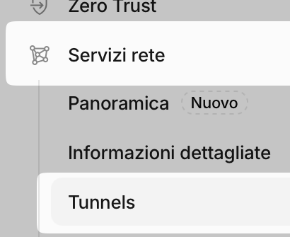
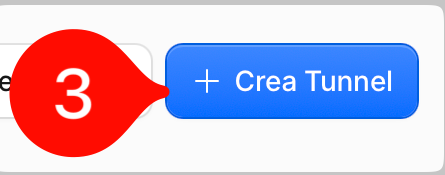
2. Copia il token
Scegli Docker anche se sei su Mac. Premi l’icona di copia a destra di Run tunnel with Docker e incolla il comando in un editor di testo. Copia solo la parte dopo --token, che inizia con eyJ. È la credenziale del tunnel. Tienila privata e chiudi il testo senza salvarlo. Se il tunnel esiste già, trovi il comando aprendo il tunnel e scegliendo Aggiungi una replica. Istruzioni Cloudflare sul token.
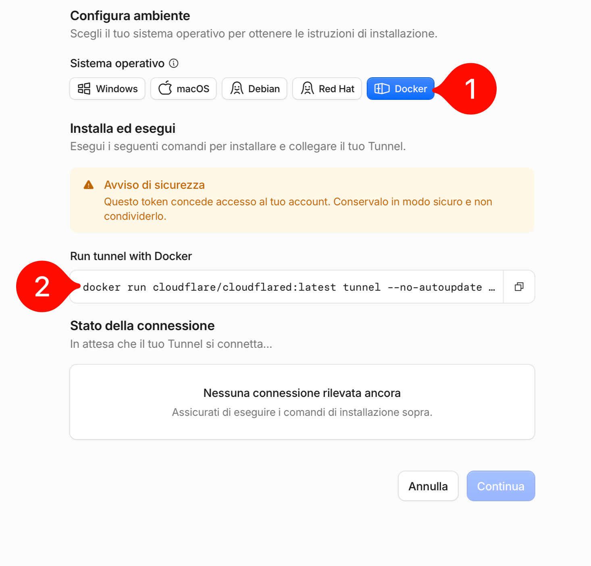
3. Avvia SkySend sul Mac
- Apri la cartella del progetto in Finder e fai doppio clic su Avvia SkySend.command.
- Incolla il token e premi Invio. Durante l’incolla la finestra rimane vuota per proteggere la credenziale.
- Scrivi il sottodominio completo, ad esempio
invii.studio.it, e premi Invio. - Premi ancora Invio per usare Documenti → SkySend. Se Documenti è sincronizzata con iCloud e vuoi tenere i file sul Mac, scrivi il percorso di una cartella locale fuori da iCloud Drive, ad esempio
~/SkySend. - Il primo avvio può richiedere qualche minuto. Quando Cloudflare indica Tunnel connesso con successo, premi Continua.
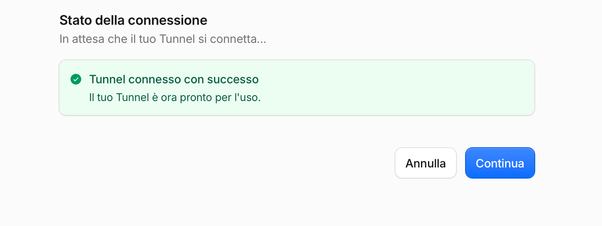
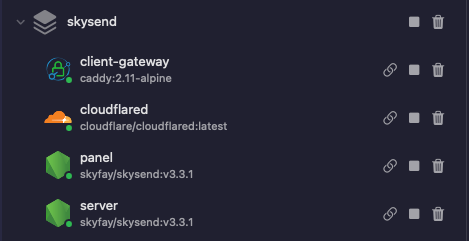
4. Collega il sottodominio
In Cloudflare apri il tunnel skysend. In Rotte, premi Aggiungi rotta e scegli Applicazione pubblicata. La rotta indica a Cloudflare dove mandare le visite a quel sottodominio.
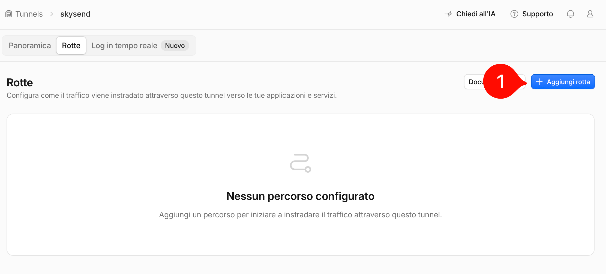
- Sottodominio
- La prima parte dell’indirizzo, ad esempio
invii. - Dominio
- Seleziona il tuo dominio, nell’esempio
studio.it. - Percorso
- Lascia vuoto.
- URL del servizio
- Scrivi
http://skysend:3000. Se Cloudflare mostra due campi, scegli HTTP e scriviskysend:3000nell’altro campo.
Controlla che Hostname completo coincida con il sottodominio che hai scritto sul Mac. Premi Aggiungi percorso e aspetta la conferma. Istruzioni Cloudflare sulle rotte.
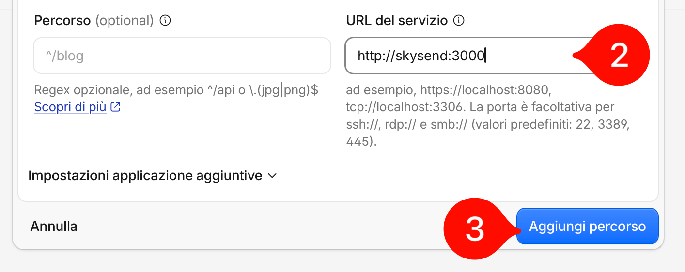
5. Apri il pannello e trova le cartelle
Sul Mac che ospita SkySend apri http://127.0.0.1:8787. Puoi salvare l’indirizzo nei preferiti. I clienti ricevono invece i link che copi da Link creati.
- Download per i clienti contiene i documenti che vuoi inviare.
- Upload dai clienti contiene i documenti che ti hanno inviato.
Trovi entrambe le cartelle sotto Documenti → SkySend, oppure nella posizione che hai scelto al primo avvio.
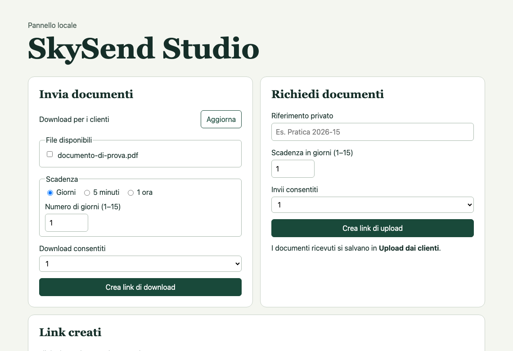
Per tenere raggiungibili i link, lascia il Mac acceso e connesso a Internet, con OrbStack attivo. Puoi chiudere il browser.
Inviare documenti
- Copia i file in Download per i clienti.
- Nel pannello apri Invia documenti, premi Aggiorna e spunta i file da condividere.
- Scegli la scadenza. Puoi scrivere da 1 a 15 giorni o selezionare 5 minuti o 1 ora. Scegli quanti download consentire.
- Premi Crea link di download. In Link creati usa Copia link per mandare il link e Copia password per comunicare la password su un altro canale.
Cosa vede il cliente
- Sblocca
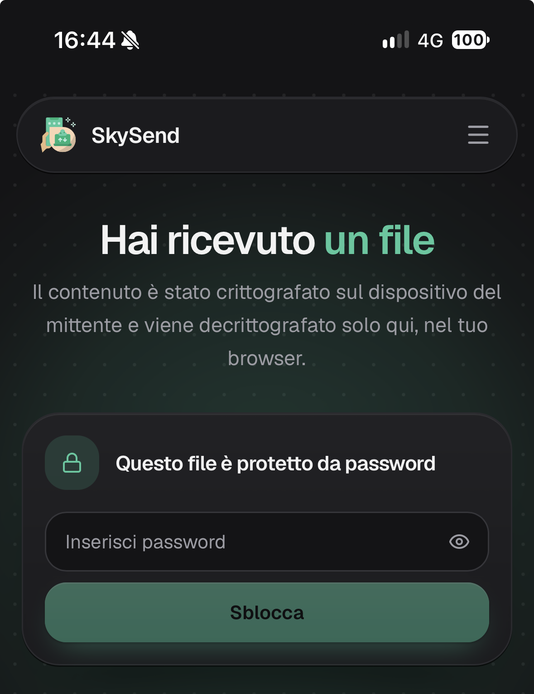
Inserisce la password ricevuta e tocca Sblocca. - Scarica
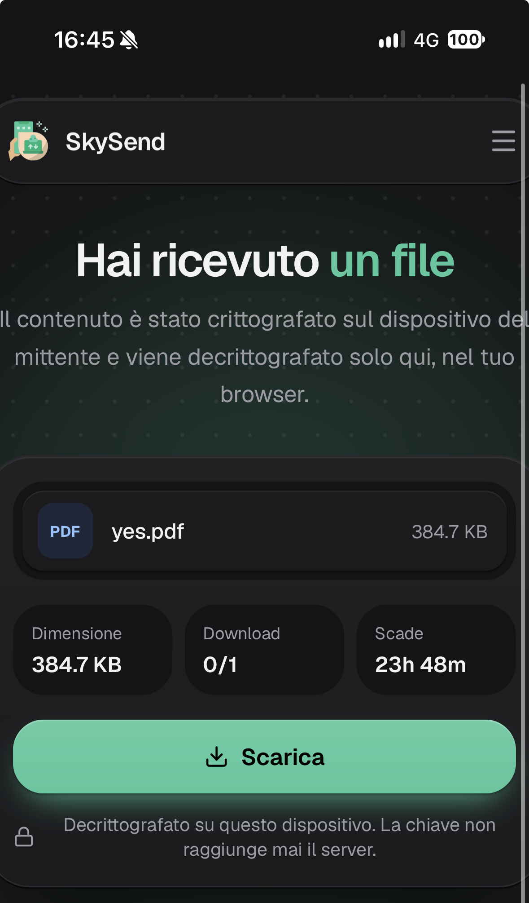
Controlla il nome del file e tocca Scarica.
Per bloccare i download successivi, premi Revoca link nel pannello.
Ricevere documenti
- In Richiedi documenti, scrivi un riferimento che ti aiuti a riconoscere l’invio in Finder, per esempio un numero di pratica. Lo vedi solo nel tuo studio.
- Scrivi la scadenza da 1 a 15 giorni e scegli quanti invii consentire. Un singolo invio può contenere più file.
- Premi Crea link di upload. In Link creati premi Copia link e manda al cliente quel link. Chi lo riceve può usarlo finché la richiesta è aperta e ci sono invii disponibili.
- Dopo l’invio, apri in Finder Upload dai clienti e cerca la sottocartella che riporta il riferimento scelto dopo il codice della richiesta. Più file nello stesso invio arrivano in uno ZIP.
Cosa vede il cliente
- Seleziona i file
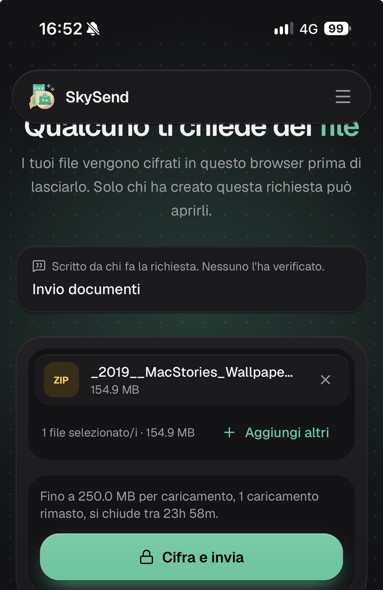
Seleziona i file e tocca Cifra e invia. - Attende il caricamento
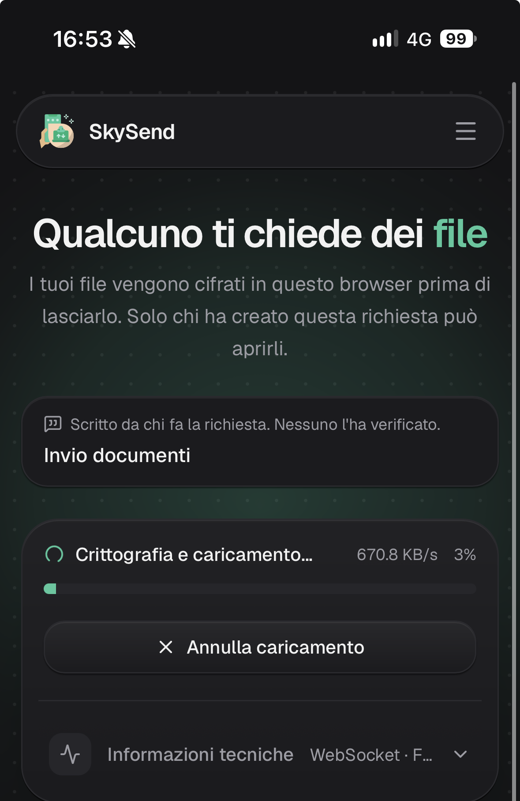
Tiene aperta la pagina fino al completamento. - Legge la conferma
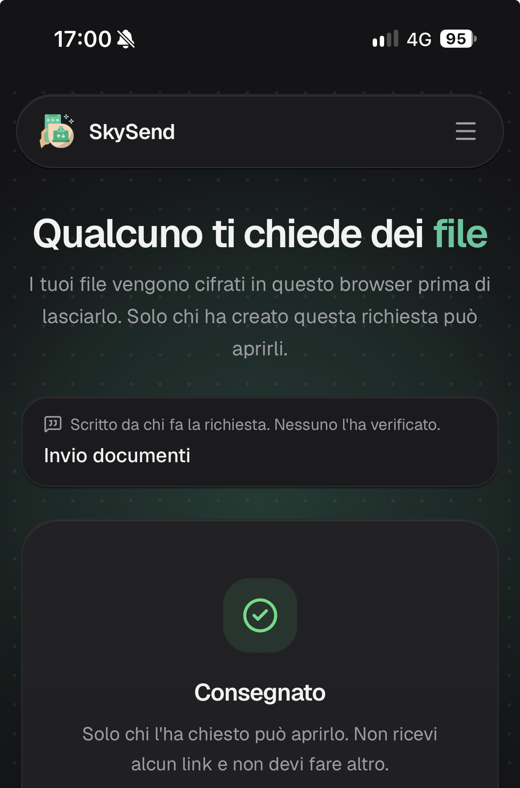
Consegnato conferma che l’invio è riuscito.
Nel test da cellulare in 4G, uno ZIP da 154,9 MB ha richiesto alcuni minuti e la pagina ha mostrato Consegnato.
Per fermare nuovi invii, premi Chiudi richiesta nel pannello.
Prova e problemi comuni
- Con un file fittizio crea un link di download. Aprilo dal telefono con il Wi-Fi spento, inserisci la password e scarica il file.
- Crea un link di upload e aprilo dal telefono. Carica un file fittizio, aspetta Consegnato e verifica che il file compaia in Upload dai clienti sul Mac.
- Il Mac non apre Avvia SkySend.command. Apri l’app Terminale, scrivi
bashseguito da uno spazio, trascina Avvia SkySend.command dal Finder nella finestra e premi Invio. - Continua è ancora disattivato. Controlla di aver avviato Avvia SkySend.command dopo aver ottenuto il token e attendi che il tunnel si colleghi.
- Il pannello locale è chiuso. Apri http://127.0.0.1:8787 sul Mac che ospita SkySend. Se il browser non trova la pagina, riapri OrbStack e fai doppio clic su Avvia SkySend.command.
- Il link cliente non si apre. Verifica che il link sia completo e ancora valido. Controlla che il tunnel sia Sano, che la rotta punti a
http://skysend:3000e che l’indirizzo corrisponda a quello inserito durante l’avvio. Se hai appena aggiunto la rotta, prova da rete mobile. - L’indirizzo pubblico da solo mostra 404. È il risultato previsto. Usa il link completo copiato da Link creati per provare la pagina del cliente.